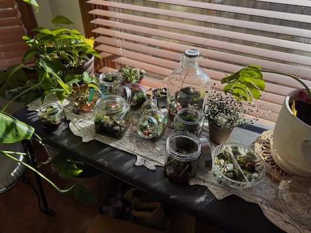
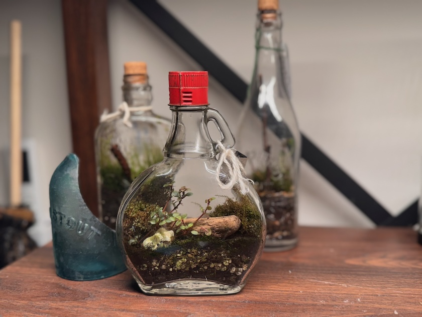
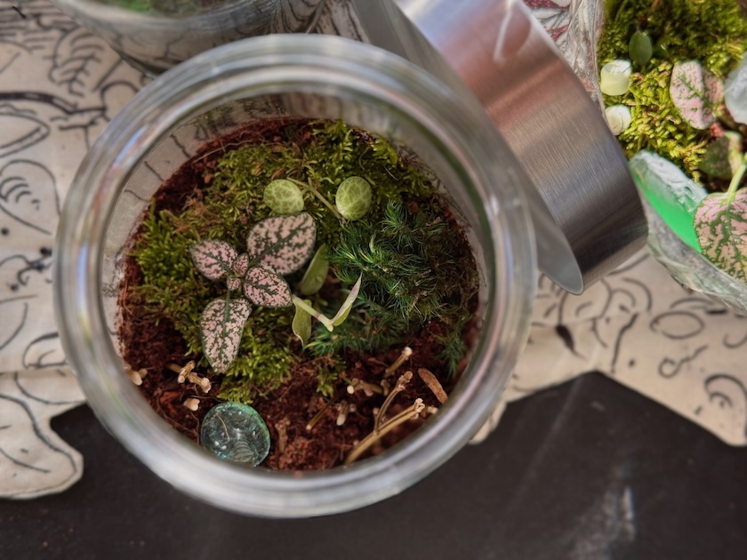

Care Guides for Different Types of Terrariums
Terrariums are miniature ecosystems that can bring a touch of nature indoors,
but the care requirements for closed terrariums and open terrariums can differ significantly.
Here's a concise guide to help you maintain each type effectively. Click from the choices below to find
input on the needs of your specific terrarium.

Closed Terrariums

Environment
- Humidity: Closed terrariums create a humid environment. The moisture from the soil and plants will condense on the walls and drip back down, making it self-sustaining.
- Light: Place in bright indirect light. Too much direct sunlight can overheat the closed space and cause the plants to fry.
Plants
- Species Selection: Choose humidity-loving plants such as ferns, mosses, or certain tropical species.
Avoid succulents, as they prefer drier conditions. Be sure to pick plants that won't grow too big
for the container.
Maintenance
- Watering: Typically, closed terrariums do not need watering for several weeks or even months. Check for condensation; if it’s too foggy, it might be overwatered.
- Pruning: Keep plants pruned to prevent overcrowding and ensure air circulation. Using long tweezers may be necessary!
- Cleaning: Occasionally, wipe the glass to remove condensation or algae buildup.
Open Terrariums
Environment
- Humidity: Open terrariums have more airflow and lower humidity levels, so they require different watering habits.
- Light: They can tolerate more direct sunlight, but avoid prolonged exposure to harsh afternoon sun.
Plants
- Species Selection: Opt for drought-tolerant plants like succulents, cacti, or air plants.
Be mindful to mix plants with similar light and water needs. Be sure to pick plants that won't grow too big
for the container.

Maintenance
- Watering: Water more frequently than closed terrariums, allowing the soil to dry out between waterings.
Always check soil moisture before watering.
- Pruning: Regularly prune to maintain size and shape. Using long tweezers may be necessary!
- Cleaning: Dust off the plants and clean the container as needed to keep it looking fresh.
General Tips for Both Types
- Positioning: Keep terrariums in a stable environment, away from drafts, heating vents, or extreme temperature changes.
- Pest Management: Check for pests regularly and treat them promptly without harming your plants.
By understanding the unique needs of closed and open terrariums, you can create and maintain thriving, beautiful microcosms that enhance
your home. Happy planting!
Back to Top ↑